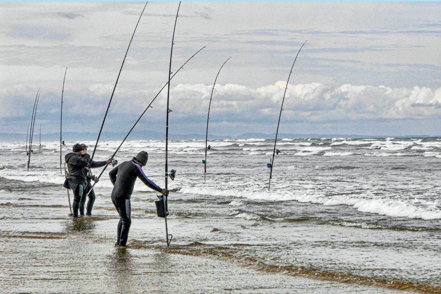

Surfcasting

Τι είναι το surfcasting
Το surfcasting είναι τεχνική ψαρέματος από την παραλία, όπου ο ψαράς ρίχνει το δόλωμα μακριά, πίσω ή πέρα από τη ζώνη που σπάνε τα κύματα, ώστε να φτάσει τα ψάρια που τρέφονται εκεί. Χρησιμοποιεί φυσικά δολώματα (σκουλήκια, καβούρια, μικρά ψάρια) και βαριά μολύβια, ώστε η αρματωσιά να μένει σταθερή μέσα στο κύμα.
Εξοπλισμός
Χρειάζονται μακριά καλάμια surf (συνήθως 3,60–4,50 m) και ισχυροί μηχανισμοί spinning ή casting, ικανοί να ρίχνουν βαριά μολύβια σε μεγάλες αποστάσεις και να δουλεύουν σε συνθήκες κύματος και ρευμάτων. Η αρματωσιά αποτελείται από βαρίδι στο τελείωμα και ένα ή περισσότερα παράμαλλα με αγκίστρια, σχεδιασμένα να κρατούν τα δολώματα λίγο πάνω από τον βυθό παρά την πίεση των κυμάτων.
Πώς δουλεύει η τεχνική
Ο ψαράς παίρνει σταθερή στάση στην αμμουδιά, φέρνει το καλάμι πίσω από τον ώμο και με μια δυνατή, ελεγχόμενη κίνηση εκτελεί μακρινή overhead βολή, αφήνοντας τη γραμμή τη στιγμή που το καλάμι περνά περίπου τις 45° προς τον ορίζοντα. Στη συνέχεια τεντώνει τη γραμμή, καρφώνει το καλάμι σε βάσεις και ρυθμίζει τα φρένα, παρακολουθώντας την κορυφή ή το κουδουνάκι για να καταλάβει πότε τσιμπάει κάποιο ψάρι.
Πού χρησιμοποιείται
Το surfcasting εφαρμόζεται σε αμμουδερές παραλίες, κάβους και ανοιχτούς κόλπους, όπου τα κύματα σπάνε πάνω στην ακτή και δημιουργούν αυλάκια και σκαλοπάτια στον βυθό που κρατούν τροφή και ψάρια. Είναι ιδανική τεχνική για ψάρια όπως τσιπούρες, λαβράκια, μουρμούρες και άλλα βυθόψαρα που πλησιάζουν την ακτή κυρίως τις ώρες χαμηλού φωτισμού ή έντονου κυματισμού.